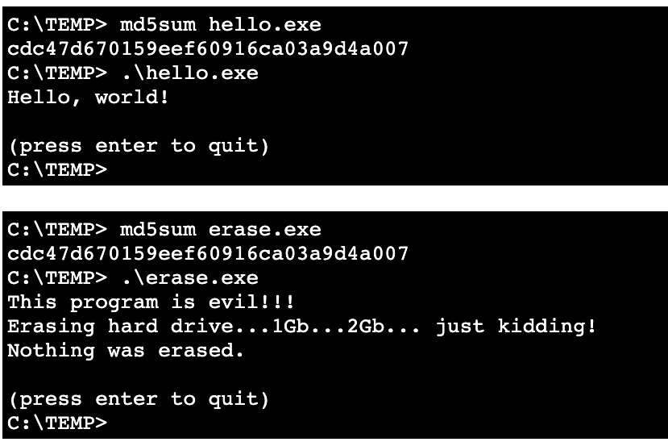

网络安全
黄玮
第十二章 计算机取证
温故
- 用蜜罐和蜜网扭转信息安全对抗的不对称局面
- 工作量不对称
- 信息不对称
- 后果不对称
- 蜜罐和蜜网技术可以应用于计算机取证
知新
- 入侵取证不等于计算机取证
- 计算机取证的概念包含了入侵取证
- 了解计算机证据的概念
- 了解计算机取证理论和关键技术
计算机取证发展史
20 世纪 70 年代
- 涉及电子数据的犯罪不断增加
- 特别在金融领域，很多执法部门人员不懂计算机，无法询问正确的问题
- 或无法有效保存证据
- 特别在金融领域，很多执法部门人员不懂计算机，无法询问正确的问题
20 世纪 80 年代
- PC 逐步发展，出现不同操作系统
- 电脑取证工具很简单
- Xtree Gold : 可识别多种文件类型、恢复删除的文件
- Norton DiskEdit / Pctools : 查找删除文件的最好的工具
- 1984年 FBI 成立了计算机分析响应组
CART(theComputer Analysis and Response Team)
20 世纪 90 年代
International Association of Computer Investigative Specialists(IACIS)- 专门培训取证分析软件
- ExpertWitness for Mac
- 第一个图形化计算机取证软件
- 恢复删除的文件和文件碎片
- 磁盘容量增大给调查带来困难
20 世纪 90 年代
- 1993 年，举行了第一届计算机证据的国际会议
- 1995 年，建立计算机证据的国际组织
IOCE（International Organization on Computer Evidence） - 1997 年，八国集团在莫斯科宣称：司法部门的职员应得到新的培训、新装备以应对高技术犯罪。
- 1998 年，八国集团指定
IOCE组织建立处理数据证据的国际准则
2001 年
- 计算机取证技术概念于 2001 年从国外引入国内，从入侵取证反黑客开始，逐渐形成
- 取证相关法律方面的建设仍不健全，随着技术的快速发展，计算机犯罪手段的不断提高，我们需要健全规范的计算机取证流程，加强计算机取证技术研究，制定和完善相关的法律法规
2011 年
- 云取证概念在 2011 年数字取证领域权威会议
IFIP WG 11.9 International Conference on Digital Forensics首次提出 - 移动取证正在发展成为数字取证的主要工作
- 移动设备取证、移动系统取证、移动网络取证、移动应用取证
- 多媒体数字内容取证
- 图像取证、视频取证、音频取证
- 复制粘贴、篡改、合成
- 图像取证、视频取证、音频取证
计算机取证理论
计算机取证的定义 (1/3)
- Lee Garber 在
IEEE Computer发表的文章 Computer Forensics: High-Tech Law Enforcement
计算机取证是分析硬盘、光盘、软盘、Zip和Jazz磁盘、内存缓冲以及其他形似的存储介质以发现犯罪证据的过程
- 计算机取证资深专家
Judd Robbins给出了如下的定义
计算机取证是将计算机调查和分析技术应用于潜在的、有法律效力的证据的确定和获取
计算机取证的定义 (2/3)
- 计算机紧急事件响应组 CERT 和取证咨询公司 NTI
计算机取证包括了对以磁介质编码信息方式存储的计算机证据的保护、确认、提取和归档
- SANS 公司
计算机取证是使用软件和工具，按照一些预先定义的程序，全面地检查计算机系统，以提取和保护有关计算机犯罪的证据
计算机取证的定义 (3/3)
- 国内通行定义
计算机取证是运用计算机及其相关科学和技术的原理和方法获取与计算机相关的证据以证明某个客观事实的过程。它包括计算机证据的确定、收集、保护、分析、归档以及法庭出示。
- 我的总结—— about 计算机取证
- 目的
- 提供证据，证明事实
- 手段
- 计算机调查和分析技术
- 目的
概念比较
- Computer forensics 计算机取证
- 重点调查从计算机硬盘和其他存储介质中获得的数据
- Network forensics 网络取证
- 重点调查针对通过网络的犯罪行为或入侵行为
- Data recovery 数据恢复
- 恢复意外原因删除或丢失的信息
- 意外掉电或服务器崩溃
- 通常明确知道需要查找的东西
- 恢复意外原因删除或丢失的信息
概念比较
- Computer forensics 计算机取证
- 是恢复隐藏或删除的，可以用于证据的数据
- 证据可以是“使人定罪的”或“辨明无罪的”
- Disaster recovery 灾难恢复
- 使用计算机取证技术恢复客户丢失的信息
- 数据恢复
- 业务重建
- 使用计算机取证技术恢复客户丢失的信息
司法鉴定
- 司法鉴定是鉴定人运用科学技术或者专门知识对涉及诉讼的专门性问题进行检验、鉴别和判断并提供鉴定结论的活动
- 计算机司法鉴定的检验、鉴别和判断等活动属于计算机取证的一部分
司法鉴定中的证据
- 证据是法官判定罪与非罪的标准
- 在人类的司法证明发展过程中，证明方法和手段经历了两次重大转变。
- 第一次是从以“神证”为主的证明向以“人证”为主的证明的转变
- 第二次是从以“人证”为主的证明向以“物证”或“科学证据”为主的证明的转变
证据的基本属性
- 证据的三个基本属性
- 客观性、关联性、合法性
- 计算机证据与传统证据一样，计算机证据必须是
- 可信的
- 准确的
- 完整的，使法官信服的
- 符合法律法规的，即可为法庭所接受的
计算机证据的特点
- 同时具有较高的精密性和脆弱易逝性
- 较强的隐蔽性
- 多媒性
- 收集迅速、易于保存、占用空间少、容量大、传送和运输方便、可以反复重现、易于使用、便于操作
- 相关数据的“挥发性”
计算机证据？电子证据？数字证据？
- 从概念和内涵上来说
- 电子证据 = 数字证据 > 计算机证据
- 电子证据的提法更为普遍
- 本章仅从技术的角度来探讨如何
- 获取电子证据
- 确保电子证据的原始性和完整性
- 保证计算机取证手段的科学性
- 计算机取证过程的可再现性
我国法律中的「证据」与「电子证据」
| 刑事诉讼法 | 民事诉讼法 | 行政诉讼法 | |
|---|---|---|---|
| 更新时间 | 2018-10-26 | 2012-08-31 | 2017-06-27 |
| 第五十条 | 第六十三条 | 第三十三条 | |
| 书证 | 书证 | 书证 | |
| 物证 | 物证 | 物证 | |
| 视听资料、电子数据 | 视听资料 | 视听资料 | |
| 证人证言 | 电子数据 | 电子数据 | |
| 被害人陈述 | 证人证言 | 证人证言 | |
| 犯罪嫌疑人、被告人供述和辩解 | 当事人的陈述 | 当事人的陈述 | |
| 鉴定意见 | 鉴定意见 | 鉴定意见 | |
| 勘验、检查、辨认、侦查实验等笔录 | 勘验笔录 | 勘验笔录、现场笔录 |
我国法律中的「证据」与「电子证据」
《最高人民法院关于修改<关于民事诉讼证据的若干规定>的决定》 已于2019年10月14日由最高人民法院审判委员会第1777次会议通过，自2020年5月1日起施行。现摘录其中关于 电子数据 的认定说明如下：
第十四条 电子数据包括下列信息、电子文件：
（一）网页、博客、微博客等网络平台发布的信息；
（二）手机短信、电子邮件、即时通信、通讯群组等网络应用服务的通信信息；
（三）用户注册信息、身份认证信息、电子交易记录、通信记录、登录日志等信息；
（四）文档、图片、音频、视频、数字证书、计算机程序等电子文件；
（五）其他以数字化形式存储、处理、传输的能够证明案件事实的信息。
计算机取证与计算机犯罪
- 我国对计算机犯罪进行规定的法律条文主要有
- 非法侵入计算机信息系统罪
- 破坏计算机信息系统罪
- 《刑法》第二百八十七条规定
- 《最高人民法院、最高人民检察院关于办理危害计算机信息系统安全刑事案件应用法律若干问题的解释》
- 2011年6月20日最高人民法院审判委员会第1524次会议、2011年7月11日最高人民检察院第十一届检察委员会第63次会议通过
- 自2011年9月1日起施行
计算机取证与计算机犯罪
- 计算机取证是以打击计算机犯罪为目标的观点是片面的
- 犯罪侦查需要计算机取证技术
- 民事案件的调查、鉴定等也会应用计算机取证技术
- 国家安全部门、军事部门都会使用计算机取证技术进行取证
计算机取证技术面临的主要挑战
- 在海量数据中准确有效地查找计算机犯罪证据
- 计算机证据的出示困难
- 计算机取证专业⼈员及具备⼀定取证知识的计算机系统、⽹络等⽅面的安全管理⼈员比较缺乏
计算机取证技术的发展趋势
- 计算机取证需求逐步融⼊系统的研究与设计，主动取证措施将普遍化
- 取证⼯具自动化与集成化
- 计算机取证领域继续扩⼤，取证⼯具出现专门化趋势
- 标准化⼯作将逐步展开，法律法规将逐步完善
- 计算机取证、计算机司法鉴定等的规范管理
小结
- 计算机取证是近几年发展起来的新学科，其领域涉及计算机科学、法学、刑事侦查学等
- 计算机取证目标
- 谁（Who）、在什么时间（When）、从哪里（Where）、怎样地（How）进行了什么（What）（非法）活动
- 联系《第十二章 蜜罐》中的蜜罐数据分析目的
- 还原入侵（4W1H）
- 蜜罐/蜜网均可以用于计算机取证
- 计算机取证手段不局限于蜜罐/蜜网
计算机取证关键技术
- 计算机取证技术流程
- 数据获取技术
- 数据分析技术
- 计算机犯罪分析
- 数据解密技术
- 证据保管、证据完整性的实现技术
- 反取证技术
计算机取证技术流程
- 保护现场
- 证据获取
- 证据鉴定与分析
- 证据追踪与提交结果
数据获取技术——数据来源
- 存储介质
- 网络通信数据
- 通过网络嗅探方式将捕获的数据持久化存储
- 转换为存储介质数据获取问题
数据获取技术
- 获取状态
- 静态获取
- 实时在线获取
- 四种方法
- 位对位：整盘至镜像文件
- 位对位：整盘至整盘
- 逻辑磁盘分区至磁盘
- 选型性拷贝（挑选文件或文件夹）
数据获取技术
- 位对位: 整盘至镜像文件 (disk-to-image)
- 最通用的方式
- 支持同时制作多个备份
- 是对原始磁盘位对位的复制
- 位对位: 整盘至整盘 (disk-to-disk)
- 适用于某些无法创建镜像文件的场景
- 需要考虑目标磁盘容量
数据获取技术
- 逻辑获取 或 选择数据获取
- 时间问题（海量数据）
- 法律问题（隐私泄露）
- 状态问题（服务器）
- 逻辑获取只能获取与相关调查案件相关的数据
- 选择数据获取还可以收集未分配空间数据(删除的)
数据获取技术
- 当进行获取时，需要考虑：
- 嫌疑磁盘的容量
- 无损压缩
- 数据校验
- 对于大容量磁盘进行获取，也可采用磁带备份的方式
- 事前了解是否可以封存嫌疑磁盘
- 嫌疑磁盘的容量
数据分析技术
- 语义还原
- 重构特定类型文件
- 元数据分析
- 文件系统元数据
- 文档元数据
- 邮件元数据
- 图片元数据
- 场景还原
- 从网络嗅探数据还原入侵过程
计算机犯罪分析
- 动机
- 窃密 / 破坏 / 控制 / 篡改
- 过程
- 犯罪现场重现
- 现实空间
- 虚拟空间（网络空间：数字孪生）
- 犯罪现场重现
- 影响
- 经济 / 政治 / 社会 / 人身安全
数据解密技术
- 软件破解工具
- 加密文档 / 磁盘 / 镜像 / WiFi 的破解
- 彩虹表
- 采用空间换时间方式，利用预计算的表提高破解速度
- 彩虹表对 Office、PDF 等加密文件解密能力强大。并可批量解密，且操作简便
数据解密技术
- 雷表（Thunder Table）
- ElcomSoft 公司的专利技术
- 雷表体积小（彩虹表的大小一般为TB级，雷表仅为GB级）
- 制作雷表非常耗时
- GPU 破解
- 单机
- 集群
电子证据保管
- 原始格式（ raw, dd ）
- 专有格式（ e01, Smart, FinalForensics ）
- AFF格式（ Advanced Forensics Format ）
电子证据保管的原始格式
- 可以将原始磁盘数据写入一个镜像文件中保存
- 优点
- 数据传输较快
- 可以忽略源盘数据读取中的一些小错误
- 大部分数据获取工具可以读取原始dd格式镜像。
- 一旦中断，已获取数据可继续使用。
- 不足
- 需要与原始磁盘或数据相同容量的空间
- 无法获取某些坏扇区
电子证据保管的专有格式
- 基本特点
- 可以选择是否压缩
- 可以分卷或分段（将一个镜像分为若干小片断）
- 可以在镜像文件中加入元数据
- 一旦中断，已获取数据不可使用
- 不足
- 不同取证工具可能无法打开
- 分卷大小、文件大小受限制
电子证据保管的 AFF 格式
- Advanced Forensics Format
- 由Dr. Simson L. Garfinkel 设计开发
- 设计目的
- 提供压缩的或非压缩的证据文件
- 磁盘之镜像方法，没有大小限制
- 为镜像文件或分段镜像文件保存元数据
- 设计简单便于扩展
- 针对多系统平台设计， 开源
- 可进行内部完整性校验
- 扩展名包括.afd 分段文件和 .afm 元数据
数据校验
- 通信传输过程中的差错检测算法
- 奇偶校验, CRC 校验
- 密码学散列算法
- MD5, SHA-1, SHA-1 至 SHA-512（256，384）
数据校验
- 数字签名：从完整性保护到真实性保护
- 通常「数据校验和」或「数字签名」是保存在电子证据的「元数据」中
MD5 碰撞生成工具

反取证技术
- 数据销毁
- 覆写法
- 消磁法
- 捣碎法/剪碎法
- 焚毁法
- 数据隐藏
- 数据加密
- 更改文件扩展名
- 隐写术
- 改变系统环境
大数据取证技术
保护现场
- 传统取证对象通常有明确的物理实体
- 计算机、手机、移动存储介质以及各种可穿戴电子设备等
- 大数据的取证对象庞杂
- 无法确定数据载体介质、数据载体所属电信机房等
- 数据可能遍布于「云管端」
数据来源
| 数据来源 | 举例 |
|---|---|
| 应用层 | 云存储、云备份、云操作系统 |
| 系统层 | 文件系统、结构化数据存储、访问控制 |
| 宿主层 | 操作系统、虚拟机、容器 |
证据获取
- 远程取证技术需求量更大
- 异构的数据存储、传输和使用节点
- 异地分布式保存的数据
宿主层数据获取
- 宿主系统被攻陷导致的应用层数据篡改风险
- 大数据系统的宿主层系统可以是主流单机操作系统，也可以是虚拟机、容器等
- 大数据文件系统对所存储数据的深度定制化封装导致在宿主层进行应用层数据提取挑战巨大
- 传统取证手段为主
- 磁盘介质中数据的提取与恢复
- 宿主系统的访问日志
系统层数据获取
- 典型的大数据系统的系统层组件：Hadoop, hbase, flume
- 数据对象：分布式存储的文件和文件相关的元数据
- 缺乏标准化的统一数据获取接口，需要针对不同系统层组件进行个性化数据获取指令或编程实现
应用层数据获取
- 数据直接保存于云端应用
- 云端应用的客户端本地同样存在部分数据备份
- 远程使用云端应用的过程中产生的通信数据可能以缓存、通信控制指令等形式碎片化保存于通信链路上的多处节点
证据鉴定与分析
- 原始数据真实性和完整性鉴定
- 取证过程合法性鉴定
证据追踪与提交结果
- 大数据系统的复杂性决定了从大数据系统中提取出来的电子证据提交形式是多样化的
- 固定的原始存储介质，例如硬盘
- 封存的电子数据，比如提取的系统进程、日志、用户浏览记录等易失数据
- 远程冻结的嫌疑人账号密码
- 电子数据属性、功能等说明
2016 年 9 月 9 日，最高人民法院 最高人民检察院 公安部印发的 《关于办理刑事案件收集提取和审查判断电子数据若干问题的规定》
第十九条 对侵入、非法控制计算机信息系统的程序、工具以及计算机病毒等无法直接展示的电子数据，应当附电子数据属性、功能等情况的说明。对数据统计量、数据同一性等问题，侦查机关应当出具说明。
计算机取证案例学习
计算机取证的重要前提
- 取证环境的可控性
- 取证手段的可靠性
- 工具运行环境的可信和完整
- 证据的完整性
取证环境
- 在线取证
- （如何确保）杜绝
rootkit - （如何检查）是否联网
- 不联网是否可以完成取证？
- （如何确保）杜绝
- 离线取证
- 持久化存储数据获取技术
- 位对位：整盘至镜像文件
- 位对位：整盘至整盘
- 逻辑磁盘分区至磁盘
- 选型性拷贝（挑选文件或文件夹）
- 持久化存储数据获取技术
取证手段
- 运行时信息
- 工具实时采集
- 基于主机的工具
- 基于网络的工具
- 工具实时采集
- 历史信息
- 日志
- 数据恢复
- 数据解密
- 持久化存储数据获取技术
运行时信息 —— 进程信息
- 正在运行进程
- 对应的磁盘上文件全路径
- 打开的所有文件描述符
lsof -p <pid>
- CPU 占用情况
- 内存占用情况
- 磁盘访问情况
- 系统调用情况
strace/ptrace
运行时信息 —— 联网信息
- 网络连接状态
- 并发连接数
- socket状态
- 路由表
nestat –r/ip route/route -n
- 网卡统计数据
netstat -i/ip link
运行时信息 —— 联网信息
- 查看当前系统的网络应用使用情况
sudo netstat -aonp --protocol inetsudo lsof -i
- 查看应用程序带宽占用详情
sudo nethogs
- 查找出并发连接数最高的几个IP地址
sudo netstat -anp |grep 'tcp\|udp' | awk '{print $5}' | cut -d: -f1 | sort | uniq -c | sort -nr
Challenge 1 of the Forensic Challenge 2010 - pcap attack trace
Challenge 1 of the Forensic Challenge 2010 - pcap attack trace（校内镜像备份）
概述
- 已掌握的原始证据
- Wireshark 抓包捕获的数据（.pcap格式）
- 为了避免侵犯隐私，其中的 IP 地址均 匿名化 处理
- 挑战
- 此次安全事件中所涉及到的操作系统（按IP地址）有哪些?
- 关于被攻击的主机的详细信息
- 该数据样本包中包含的TCP并发会话数量
- 被攻击目标主机在此次安全事件中被利用的漏洞？
手工单步分析

手工单步分析
# 1. 统计主机信息
tshark -r attack-trace.pcap -z ip_hosts,tree -qn
# 2. 谁主动发起网络连接
tshark -r attack-trace.pcap -Y "tcp.flags==0x02" -n
# 3. 推断攻击持续时间
# 攻击持续时间 < 捕获到的数据包的起止时间
# 攻击持续时间 < 16 秒
capinfos attack-trace.pcap
# 4. 自动分析攻击详情
# TODO 修改 /etc/suricata/suricata.yml 重新定义「内网」范围
# HOME_NET [192.150.11.0/24]
# 已完成第九章的 suricata 体验任务，在线更新了检测规则
# ref: https://c4pr1c3.gitee.io/cuc-ns-ppt/chap0x09.md.html#/quick-start-of-suricata
suricata -r attack-trace.pcap
# 查看报警日志
cat -n fast.log
# 4.1. 修改检测规则
# 找到包含 2003-0533 关键词且该行规则被注释的行，取消注释
grep 2003-0533 /var/lib/suricata/rules/suricata.rules | grep -E "^#"
# 4.2. 再用修改后的规则检查一次
suricata -r attack-trace.pcap
# 4.3. 再次查看报警日志，对比新产生的报警
cat -n fast.log
# 5. 查看 TCP 会话信息
# 注意输出结果默认是按照「数据帧数量」排序的
tshark -r attack-trace.pcap -qnz conv,tcp
# 猜测
# 五个TCP会话对应 3 个不同的攻击阶段
# 扫描/枚举、漏洞利用、后渗透
# 5.1 查看扫描阶段的数据包
tshark -r attack-trace.pcap -Y "tcp.stream eq 0"
# 5.2 查看漏洞利用阶段的数据包
tshark -r attack-trace.pcap -Y "tcp.stream eq 1"
# 查看该阶段 TCP 会话的应用层负载数据
tshark -r attack-trace.pcap -q -z follow,tcp,hex,1
# 把该阶段的通信数据另存为 pcap 文件
tshark -r attack-trace.pcap -q -z follow,tcp,hex,1 -w exploit.pcapng
# 使用 Wireshark 进行「应用层负载」另存为操作
# 5.3 执行攻击指令（漏洞利用之发送攻击负载）
tshark -r attack-trace.pcap -q -z follow,tcp,ascii,2
# 5.4 后渗透阶段
tshark -r attack-trace.pcap -q -z follow,tcp,ascii,3
# 5.5 后渗透阶段（下载后门程序）
tshark -r attack-trace.pcap -q -z follow,tcp,hex,4
# 把该阶段的通信数据另存为 pcap 文件
tshark -r attack-trace.pcap -q -z follow,tcp,hex,4 -w malware.pcapng另一种手工单步分析方法
查阅课本中本章的实验一节内容，使用 Zeek 来发现 IoC: Indicator of Compromise 。
本章小结
- 入侵取证不等于计算机取证
- 实际的入侵取证难点在于准确全面的“攻击重放”
- 了解计算机证据的概念
- 证据类型 / 取证目标 / 证据保管
- 了解计算机取证理论和关键技术
- 跨学科理论
- 综合技术
课后思考题
试述防火墙、入侵检测、应用程序安全加固、蜜罐和蜜网技术以及计算机取证技术之间的关系？如何综合运用这些技术来进行网络与系统安全防护与加固？